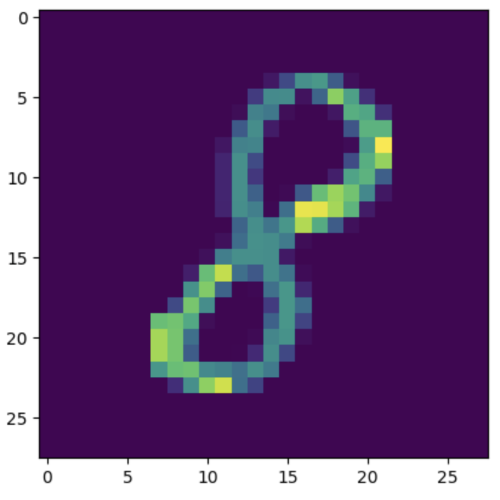

Written by Nirav Pandey
12th February, 2025

The MNIST dataset, which stands for the Modified National Institute of Standards and Technology dataset, is a widely used collection of handwritten digits commonly employed in machine learning and computer vision research. It consists of 60,000 training images and 10,000 test images, each representing a single digit (0-9) in a grayscale format. This project explores the use of the MNIST dataset to build and evaluate machine learning models capable of accurately recognizing and classifying handwritten digits. By leveraging techniques such as deep learning, neural networks, and various optimization methods, the goal is to understand how these models perform in terms of accuracy and efficiency while exploring ways to improve classification results.